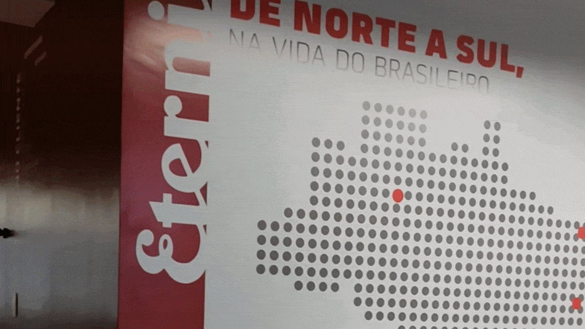
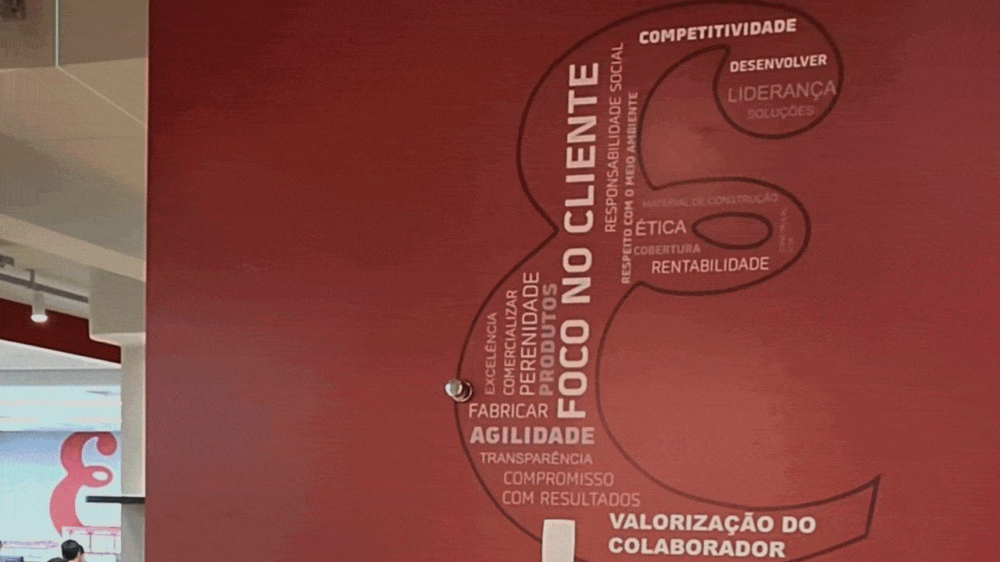
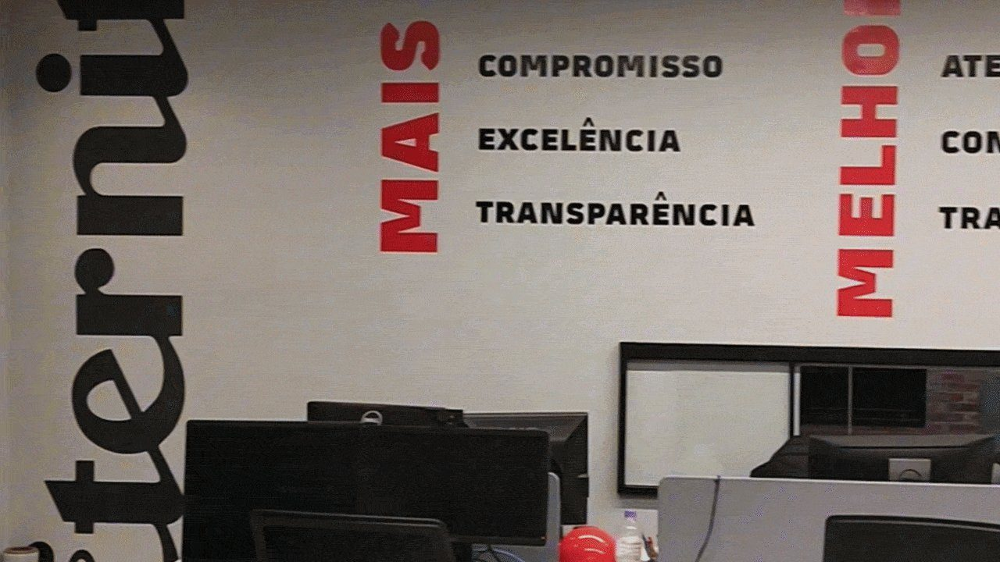

Imersão
Visita técnica ao lado do cliente para entender a essência da marca e a realidade da operação.
Espaços que falam a língua da marca: identidade visual para os ambientes de uma empresa em transição.
Case desenvolvido na Agência Bee Creative para Eternit. Ver case original ↗

01 / O PROJETO
A Eternit é líder no mercado de coberturas e atua também em construção industrializada, com soluções que aliam tradição, inovação e qualidade.
A empresa passava por uma transição, com o surgimento de uma nova unidade e a revitalização de outra. Nossa missão era garantir que a equipe chegasse a um espaço que já falasse a língua da marca.

02 / ATITUDE E RESULTADOS
Para entender a essência da marca e construir uma comunicação conectada à realidade da empresa, começamos com uma visita técnica ao lado do cliente. Dessa imersão, levantamos os principais elementos da comunicação institucional, os desejos da diretoria e as mensagens-chave que precisavam ganhar espaço.
Visita técnica ao lado do cliente para entender a essência da marca e a realidade da operação.
Conexão entre os elementos institucionais, os desejos da diretoria e as mensagens-chave.
Identidade visual aplicada aos espaços, conversando com a marca e, ao mesmo tempo, com as pessoas.

